03/11/2017 — 12 ca ví dụ sử dụng công thức 3 biến và 4 biến, cùng công thức đơn giản hoá, để phân biệt ST chênh lên bình thường với tắc LAD kín đáo
Bản dịch tiếng Việt của bài "12 Example Cases of Use of 3- and 4-variable formulas, plus Simplified Formula, to differentiate normal STE from subtle LAD occlusion" – Dr. Smith’s ECG Blog. Giữ nguyên toàn bộ 20 hình ảnh của bản gốc.
Dưới đây là 12 ca ví dụ sử dụng công thức 3 biến và công thức 4 biến, giúp phân biệt ST chênh lên bình thường ở các chuyển đạo V2-V4 với ST chênh lên do tắc LAD kín đáo.
CẢNH BÁO: công thức này không hoàn hảo. Hãy thận trọng khi dùng nó để đảo ngược nhận định trước đó của bạn rằng điện tâm đồ thể hiện tắc LAD. Tôi khuyên dùng công thức khi bạn lo ngại rằng một điện tâm đồ có vẻ là ST chênh lên bình thường lại có thể là tắc LAD. Độ nhạy không hoàn hảo.
Cảnh báo mới: khi dùng QTc, KHÔNG hiệu chỉnh nếu tần số tim dưới 60 nhịp/phút.
Hướng dẫn sử dụng ứng dụng iPhone miễn phí subtleSTEMI cho công thức 3 biến. Phiên bản công thức 4 biến sẽ ra mắt sau.
Đây là một bài giảng video về tắc LAD kín đáo: One hour lecture on Subtle ECG Findings of Coronary Occlusion (Bài giảng một giờ về các dấu hiệu điện tâm đồ kín đáo của tắc mạch vành)
Công thức 3 biến xuất phát từ bài báo này:
Smith SW và cs. Electrocardiographic Differentiation of Early Repolarization FromSubtle Anterior ST-Segment Elevation Myocardial Infarction (Phân biệt bằng điện tâm đồ giữa tái cực sớm và nhồi máu cơ tim ST chênh lên thành trước kín đáo). Tạp chí Annals of Emergency Medicine 2012;60:45-56.
Công thức 4 biến xuất phát từ bài báo tiếp theo này:
A new 4-variable formula to differentiatenormal variant ST segment elevation in V2-V4 (early repolarization) from subtle left anterior descending coronary occlusion – Adding QRS amplitude of V2improves the model. (Một công thức 4 biến mới để phân biệt ST chênh lên biến thể bình thường ở V2-V4 (tái cực sớm) với tắc động mạch liên thất trước kín đáo – Bổ sung biên độ QRS ở V2 giúp cải thiện mô hình.)
Công thức đã được thẩm định ngoài trong nghiên cứu này:
A tale of two formulas: Differentiation of subtle anterior MI from benign ST segment elevation (Chuyện về hai công thức: phân biệt nhồi máu cơ tim thành trước kín đáo với ST chênh lên lành tính)
Điều cốt yếu là chỉ dùng công thức khi chẩn đoán phân biệt là tắc LAD kín đáo với tái cực sớm. Do đó, phải có ST chênh lên ít nhất 1 mm ở bất kỳ chuyển đạo nào trong V2-V4. Nếu có LVH, công thức có thể không áp dụng được. Nếu có các đặc điểm khiến tắc LAD trở nên rõ ràng (ST chênh xuống ở thành dưới hoặc thành trước, ST dạng lồi, biến dạng phần cuối QRS, sóng Q, hoặc ST chênh lên từ 5 mm trở lên), thì công thức CÓ THỂ KHÔNG áp dụng được. Những ca loại này đã bị loại khỏi nghiên cứu vì là STEMI thành trước rõ ràng.
–QTc là giá trị đo bằng máy tính. Không hiệu chỉnh theo tần số tim nếu tần số dưới 60
–RAV4 = biên độ sóng R, tính bằng mm, ở chuyển đạo V4.
–ST chênh lên (STE) được đo tại 60 mili giây sau điểm J, so với đoạn PR, tính bằng milimét.
Công thức: (1.196 x STE tại 60 ms sau điểm J ở V3, tính bằng mm) + (0.059 x QTc đo bằng máy tính) – (0.326 x biên độ sóng R ở V4, tính bằng mm).
Giá trị lớn hơn 23.4 có độ nhạy và độ đặc hiệu khá cao đối với tắc LAD.
Giá trị lớn hơn 22.0 nhạy hơn, ít âm tính giả hơn, nhưng độ đặc hiệu giảm xuống 80%.
Công thức 4 biến (chính xác hơn một chút so với công thức 3 biến):
Dùng cùng các số đo, nhưng bổ sung tổng biên độ QRS (cả sóng R và sóng S) ở chuyển đạo V2:
Công thức: (1.062 x STE tại 60 ms sau điểm J ở V3, tính bằng mm) + (0.052 x QTc đo bằng máy tính) – (0.151 x QRSV2) – (0.268 x biên độ sóng R ở V4, tính bằng mm).
Giá trị lớn hơn 18.2 có độ nhạy và độ đặc hiệu khá cao đối với tắc LAD.
Công thức 4 biến dựa trên bài báo này:
Driver, BE và cs. A new 4-variable formula to differentiate normal variant ST segment elevation in V2-V4 (early repolarization) from subtle left anterior descending coronary occlusion – Adding QRS amplitude of V2 improves the model. Tạp chí J Electrocardiology 50(5):561-569; tháng Chín/tháng Mười năm 2017.
Truy cập vào đây để tìm các applet Excel. Bạn nhập các https://drsmithsecgblog.com/p/rules-equations.html
Giá trị công thức càng gần điểm cắt 18.2 thì càng chính xác.
Xem bài này để diễn giải chính xác hơn kết quả của công thức 4 biến, có kèm đồ thị.
Tóm lại:
Ở điểm cắt 17.0, công thức có độ nhạy 97%.
Ở điểm cắt 19.0, công thức có độ đặc hiệu 97%.
Cuối cùng, có một công thức đơn giản hoá không hiệu chỉnh QT:
Aslanger. Tạp chí Am J Cardiol 2018; 122(8):1303-1309.
(RAV4 tính bằng mm + QRSV2 tính bằng mm) – [(QT tính bằng mm) + STE60V3 tính bằng mm)
Giá trị nhỏ hơn 12 tương ứng với tắc LAD; giá trị lớn hơn 12 tương ứng với ST chênh lên biến thể bình thường
Độ nhạy, độ đặc hiệu, độ chính xác = 86.9%, 92.3%, 90.1%
Ca 1
STEMI thành trước cấp do tắc LAD, hay tái cực sớm lành tính (BER)?
Đây là điện tâm đồ đầu tiên tại khoa cấp cứu của một bệnh nhân nam 46 tuổi bị đau ngực:

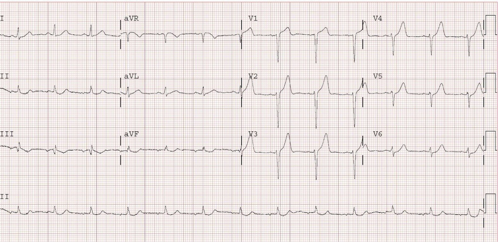
ST chênh lên tại 60 ms sau điểm J ở chuyển đạo V3 = 2.5 mm
Biên độ sóng R ở V4 = 2
QRS V2 = 19 mm
Công thức 3 biến = 27.11 (trên 23.4, phù hợp với tắc LAD)
Công thức 4 biến = 21.09 (trên 18.2, phù hợp với tắc LAD)
Bệnh nhân này bị chẩn đoán nhầm là ST chênh lên biến thể bình thường. Anh ấy được nhập viện để “loại trừ nhồi máu cơ tim”. Kết quả khẳng định nhồi máu cơ tim cấp với troponin I đỉnh 130 ng/mL.
Dưới đây tôi minh họa cách đo STE tại 60 ms sau điểm J ở chuyển đạo V3:

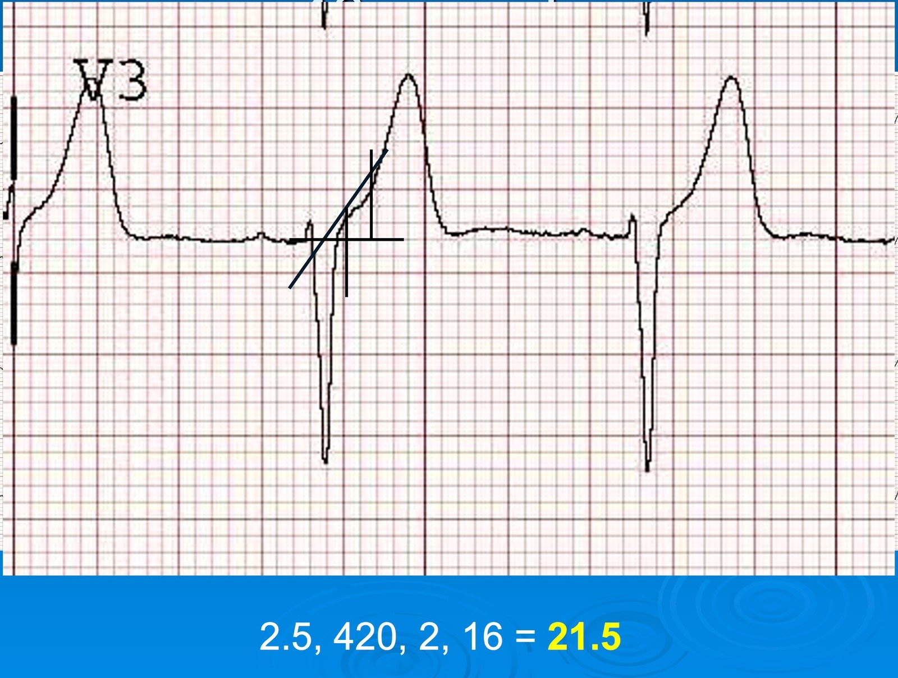
Chụp mạch vành ngày hôm sau cho thấy tắc 100% LAD đoạn gần. Bệnh nhân có rối loạn vận động thành trước ở giai đoạn hồi phục.
Ca 2
Nhồi máu cơ tim cấp do tắc LAD, hay tái cực sớm?

ST chênh lên tại 60 ms sau điểm J ở chuyển đạo V3 = 3.0 mm
Biên độ sóng R ở V4 = 17
QRS V2 = 16 mm
Công thức 3 biến = 24.89 (trên 23.4, phù hợp với tắc LAD)
Công thức 4 biến = 19.87 (trên 18.2, phù hợp với tắc LAD)
Điều này đã không được nhận ra; điện tâm đồ ghi lại ở phút thứ 69 cho thấy sóng Q mới ở V2-V4 nhưng không được để ý, và bệnh nhân phải chờ một thời gian dài tại khoa cấp cứu trước khi STEMI được chẩn đoán.
Tắc 100% LAD.
Ca 3
Hôm qua tôi đang đọc một chồng điện tâm đồ và thấy bản này, không kèm thông tin lâm sàng nào….

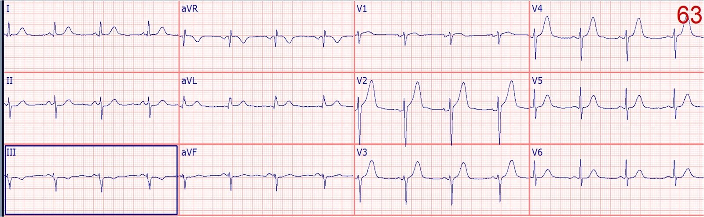
ST chênh lên tại 60 ms sau điểm J ở chuyển đạo V3 = 1.5 mm
Biên độ sóng R ở V4 = 4.0
QRS V2 = 22 mm Công thức 3 biến = 24.1 (trên 23.4, phù hợp với tắc LAD) Công thức 4 biến = 18.0 (dưới 18.2, phù hợp với ST chênh lên bình thường)
Công thức 3 biến dương tính, nhưng do QRS ở V2 cao 22 mm, công thức 4 biến chỉ vừa sát ngưỡng âm tính. Bất cứ khi nào giá trị tiến gần điểm cắt, kết luận âm tính là rất nguy hiểm. Một cách đúng đắn, các bác sĩ đã ghi lại điện tâm đồ 20 phút sau và bản ghi đó cho phép chẩn đoán STEMI thành trước.
Tắc 100% LAD.
Ca 4
STEMI thoáng qua, các điện tâm đồ liên tiếp từ trước viện đến bệnh viện, mọi kết quả troponin đều âm tính (dưới 0.04 ng/ml)
Một bệnh nhân nam 45 tuổi gọi 911 vì đau ngực:

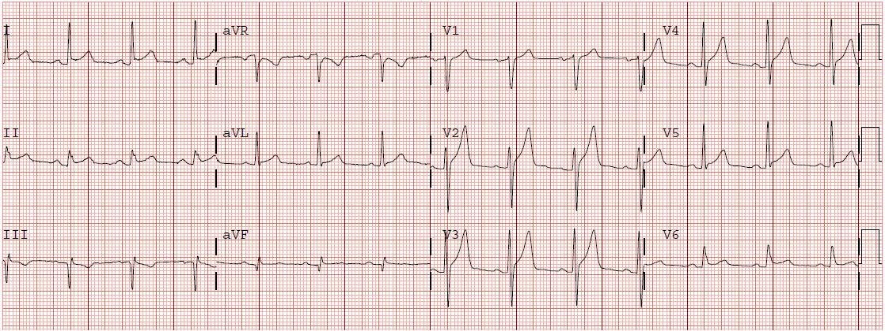
ST chênh lên tại 60 ms sau điểm J ở chuyển đạo V3 = 3.5 mm
Biên độ sóng R ở V4 = 13
QRS V2 = 18 mm Công thức 3 biến = 23.54 (trên 23.4, phù hợp với tắc LAD) Công thức 4 biến = 18.315 (trên 18.2, phù hợp với tắc LAD)
Ca này đã không được chẩn đoán. May mắn là mạch đã tái tưới máu tự phát và các điện tâm đồ sau đó cho thấy ST chênh lên đã hồi phục. Mọi kết quả troponin đều dưới giới hạn phát hiện.
Chụp mạch vành cho thấy hẹp khít LAD có huyết khối. Bệnh nhân được phẫu thuật bắc cầu chủ vành (CABG).
Ca 5. Âm tính giả với cả hai công thức.
Bệnh nhân nam ngoài 40 tuổi một chút, đau ngực 1.5 giờ

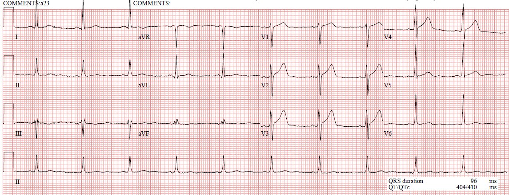
ST chênh lên tại 60 ms sau điểm J ở chuyển đạo V3 = 2.5 mm
Biên độ sóng R ở V4 = 14
QRS V2 = 16 mm Công thức 3 biến = 22.6 (dưới 23.4, phù hợp với ST chênh lên bình thường) Công thức 4 biến = 17.8 (dưới 18.2, phù hợp với ST chênh lên bình thường)
Ở điểm cắt 23.4 (điểm cắt tôi thường khuyến nghị), độ nhạy đối với tắc LAD trong số các ca kín đáo là 86% (cao hơn nhiều nếu lấy toàn bộ các ca tắc LAD làm mẫu số), với độ đặc hiệu 91%.
Ở điểm cắt 22.0, độ nhạy là 96% nhưng độ đặc hiệu giảm xuống 81%. Tôi lo ngại với bất kỳ giá trị nào lớn hơn 22.
Với tôi, các sóng T trông quá đầy đặn để có thể là bình thường. Và dù giá trị công thức không lớn hơn 23.4, ở mức 22.6 hay 23.2 thì nó cũng đủ gần để phải lo ngại.
Ở thời điểm 7 giờ sau khi đến viện, sau nhiều kết quả troponin dương tính, bệnh nhân được chụp mạch vành và có tắc 100% LAD. Troponin T đỉnh rất cao, ở mức 2.11 ng/mL.
Ca 6.
Một phụ nữ 75 tuổi than phiền bị “trào ngược”.
Ca bệnh đáng kinh ngạc minh họa giá trị của việc ghi điện tâm đồ liên tiếp thường xuyên

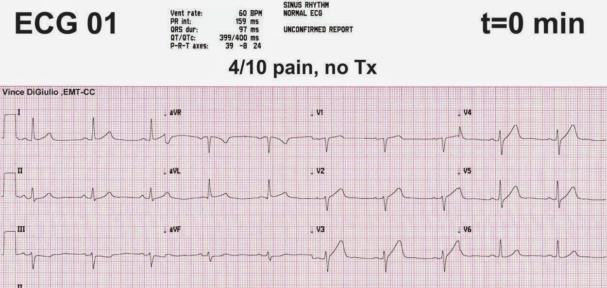
ST chênh lên tại 60 ms sau điểm J ở chuyển đạo V3 = 2.5 mm
Biên độ sóng R ở V4 = 4.5
QRS V2 = 6 mm Công thức 3 biến = 25.12 (trên 23.4, phù hợp với tắc LAD) Công thức 4 biến = 21.17 (trên 18.2, phù hợp với tắc LAD)
Điều này dẫn đến việc ghi các điện tâm đồ liên tiếp:

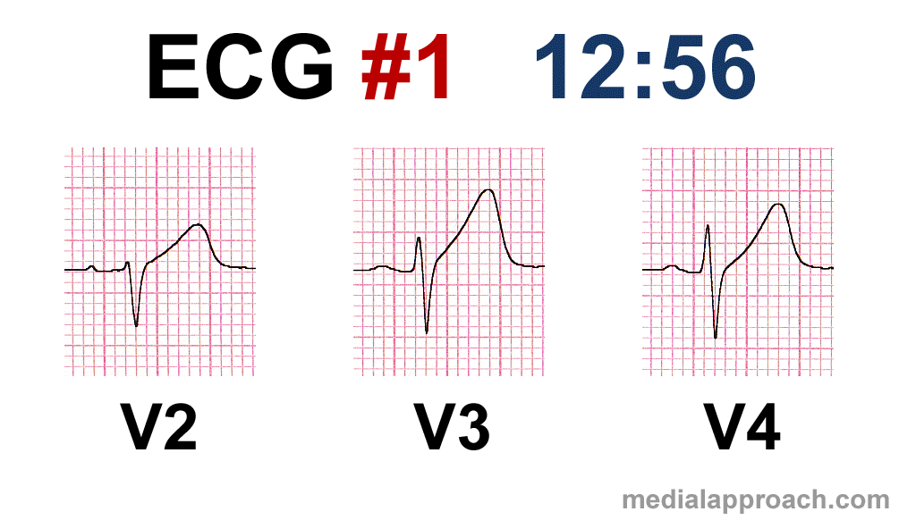
Có tắc 100% một nhánh bờ tù lớn (thật bất ngờ, không phải LAD! Nhưng thực ra, công thức chỉ cho bạn biết rằng vùng thành tim nằm dưới các chuyển đạo V2-V4 bị tổn thương; nó không thể thực sự xác định động mạch liên quan).
Ca 7.
Giả bình thường hóa sóng Wellens
Một bệnh nhân nam 60 tuổi bị đau ngực đang giảm dần

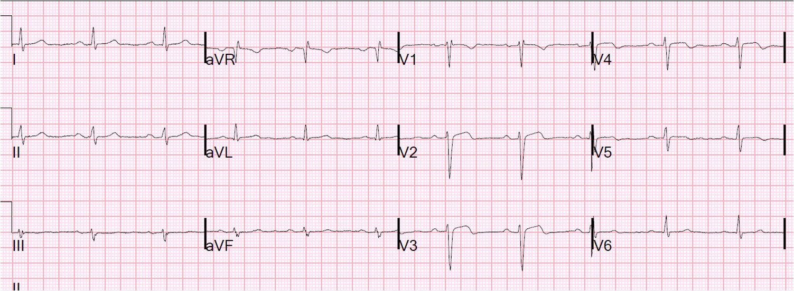
ST chênh lên có bình thường không? Biên độ sóng R rất thấp gợi ý là KHÔNG. Xem công thức tại đây: QTc là 380
ST chênh lên tại 60 ms sau điểm J ở chuyển đạo V3 = 1.5 mm
Biên độ sóng R ở V4 = 2.5
QRS V2 = 15.5 mm Công thức 3 biến = 23.4 (bằng điểm cắt 23.4, phù hợp với tắc LAD)
Công thức 4 biến = 18.34 (trên 18.2, phù hợp với tắc LAD)
Vì vậy, điều này, cùng với đau ngực đang giảm dần, có vẻ là một ca tắc LAD đang tái tưới máu.
Trong hội chứng Wellens, động mạch đang mở. Sóng T đảo ngược cho thấy động mạch liên quan đến nhồi máu đã được tái tưới máu.
Huyết áp tăng, mạch giảm xuống 45. Bệnh nhân được dùng aspirin (ASA), Plavix 600mg, heparin và truyền nitroglycerin liên tục.
Một điện tâm đồ khác ghi 15 phút sau, khi hết đau, có sóng T đảo ngược nhiều hơn.
Rồi 15 phút sau đó, cơn đau tái phát và sóng T giả bình thường hóa. ST chênh lên vẫn kín đáo, nhưng giá trị công thức còn cao hơn nữa.
Bệnh nhân được thông tim và có hẹp 99% LAD đoạn xa kèm huyết khối và dòng chảy TIMI-2.
Troponin I ban đầu trả về ở mức 1.5 ng/ml. Đỉnh là 8.1 ng/ml.
Ca 8.
Công thức dương tính với tắc LAD. Nhưng siêu âm tim không thấy rối loạn vận động thành! Đó là gì?
Một bệnh nhân nam 35 tuổi than phiền đau ngực:

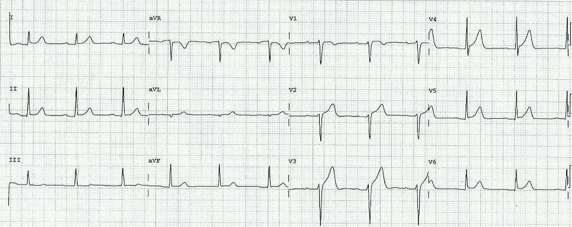
ST chênh lên tại 60 ms sau điểm J ở chuyển đạo V3 = 4.0 mm
Biên độ sóng R ở V4 = 12.5
QRS V2 = 12.5 mm Công thức 3 biến = 23.95 (trên 23.4, phù hợp với tắc LAD) Công thức 4 biến = 19.53 (trên 18.2, phù hợp với tắc LAD)
Bản điện tâm đồ này được gửi cho tôi mà không kèm thông tin lâm sàng nào, để hỏi ý kiến của tôi. Tôi lo ngại tắc LAD. Các bác sĩ lâm sàng cho rằng nó bình thường, nhưng do troponin tăng nên nghĩ là viêm cơ tim. Không có rối loạn vận động thành. Sau nhiều giờ, họ quyết định rằng chụp mạch vành là phù hợp và phát hiện tắc đoạn xa LAD, đã được tái thông và đặt stent.
Tắc 100% đoạn xa LAD.
Ca 9.
Patient presentation is important (Bệnh cảnh lâm sàng của bệnh nhân là quan trọng)
Đây là một bệnh nhân hơn 60 tuổi bị đau ngực cấp:

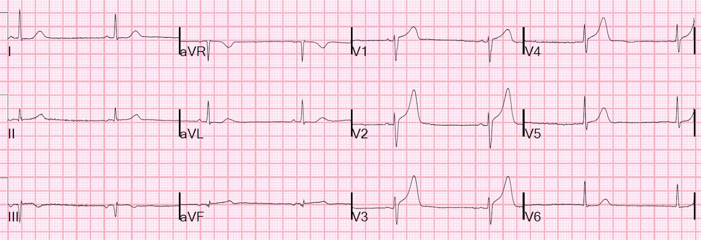
Tuy nhiên, có ST chênh lên rất đáng ngờ ở III và aVF, kèm ST chênh xuống ở aVL. Với tôi, điều này khiến điện tâm đồ gần như đủ để chẩn đoán thiếu máu cục bộ, dù nếu đây là tắc LAD thì đáng lẽ phải có ST chênh xuống ở III và aVL, nên hơi khó hiểu. Trừ khi bạn tính đến một LAD "vòng qua mỏm" (wraparound) tới thành dưới.
Cũng có sóng T dương ở V1, lớn hơn ở V6. Đây là một dấu hiệu rất yếu của tắc LAD, và không cải thiện thêm khả năng chẩn đoán so với mô hình công thức của chúng tôi trong chẩn đoán tắc LAD so với tái cực sớm. Trong nghiên cứu đó, dấu hiệu này có mặt ở 39% trường hợp tắc LAD và 15% trường hợp tái cực sớm.
Các số đo là:
RA V4 = 6.5
STE60V3 = 3.0
QRSV2 = 12.5
QTc = 362 ms
Do đó giá trị các công thức là:
Công thức 3 biến: 22.83 (dưới 23.4; ngưỡng chính xác nhất, nhưng không nhạy nhất). Tôi vẫn lo khi giá trị trên 22.0 (vẫn bỏ sót 4% trường hợp tắc LAD khi dưới 22.0)
Công thức 4 biến 18.38 (trên 18.2; ngưỡng chính xác nhất, nhưng không nhạy nhất). Vì vậy kết quả này gợi ý mạnh tắc LAD.
QTc đo bằng máy tính = 362 ms (giá trị này RẤT ngắn đối với tắc LAD, nhưng ngắn như vậy là do hiệu chỉnh theo nhịp tim chậm; QT đo được là 413 ms.) Đây là lý do chính khiến giá trị công thức không cao lắm.
Như vậy, điện tâm đồ là tái cực sớm theo công thức 3 biến cũ và là tắc LAD theo công thức mới.
Mặc dù ST chênh lên chưa đủ để chẩn đoán, và sóng T với kích thước này có thể gặp trong tái cực sớm, nhưng biên độ QRS và sóng R thấp thì không.
Các dấu hiệu ST ở thành dưới cũng khiến điện tâm đồ này đủ để chẩn đoán.
Trong trường hợp bạn thắc mắc về sóng T và nhịp chậm, kali máu bình thường.
Tại sao nhịp chậm? Hãy nghĩ về ST chênh lên ở thành dưới đó. Có thể còn có nhồi máu cơ tim thành dưới do LAD "vòng qua mỏm" kèm theo nhịp chậm xoang.
Kết cục
Bác sĩ cấp cứu đã kích hoạt phòng thông tim (cath lab). Bệnh nhân bị tắc 100% LAD và troponin I đỉnh là 51 ng/mL.
Ca 10.
Một bệnh nhân hơn 50 tuổi bị đau ngực và ST chênh lên tối thiểu ở các chuyển đạo trước tim
Điện tâm đồ này được ghi lúc 1350, khi cơn đau giảm sau dùng nitroglycerine:

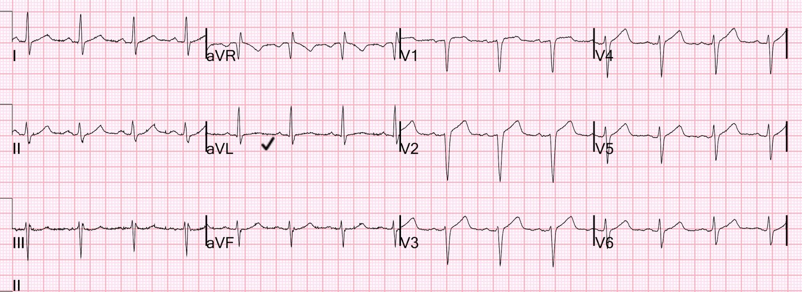
Kết quả đọc bằng máy tính là bình thường
Bác sĩ tim mạch đọc lại là bình thường
Bạn nghĩ sao?
Mô tả thêm: Còn có tăng tiến sóng R kém, với sóng R nhỏ ở V4. Sóng T hơi rộng và lớn, nhưng có lẽ chưa thể gọi là tối cấp. Có ST chênh xuống tối thiểu ở aVF.
Một bác sĩ nội trú của chúng tôi đã nhắn tin cho tôi điện tâm đồ-1 này, kèm lời nhắn:
“Đau ngực 3 giờ, QTc = 415 ms, công thức 3 biến là 25.3. Thầy nghĩ sao?”
[Công thức 3 biến để phân biệt ST chênh lên biến thể bình thường với ST chênh lên của tắc LAD kín đáo có thể truy cập bằng cách bấm vào đường link ở đầu trang và nhập các giá trị vào ứng dụng excel trực tuyến. Các giá trị là: 1. ST chênh lên tại 60 ms sau điểm J ở chuyển đạo V3. 2. Biên độ sóng R ở V4. 3. QTc đo bằng máy tính. Xem thêm ứng dụng iPhone miễn phí “SubtleSTEMI”. Xem thêm MDcalc.]
Giá trị trên 23.4 rất đáng lo ngại tắc LAD.
[Công thức 4 biến bổ sung toàn bộ biên độ QRS ở chuyển đạo V2 và chính xác hơn công thức 3 biến. Công thức là: (1.062 x ST chênh lên tại 60 ms sau điểm J ở V3 tính bằng mm) + (0.052 x QTc đo bằng máy tính) – (0.151 x QRSV2) – (0.268 x biên độ sóng R ở V4 tính bằng mm). Cũng có thể truy cập công thức ở đầu trang, nhập giá trị vào ứng dụng excel.]
Bài công bố công thức có thể xem tại đây: A new 4-variable formula
Giá trị trên 18.2 khá nhạy và đặc hiệu cho tắc LAD.
Giá trị tính được là 19.2 (gợi ý cao tắc mạch)
Tôi đề nghị ghi các điện tâm đồ liên tiếp, và chúng đã được ghi khi bệnh nhân giảm đau dần sau dùng nitroglycerine:
Đây là các điện tâm đồ liên tiếp, V1-V3
Hình đầu tiên là một điện tâm đồ ghi trước đó, mà các bác sĩ điều trị không biết đến.
1300 1350, đau giảm 1430 1700, hết đau 1800, vẫn hết đau

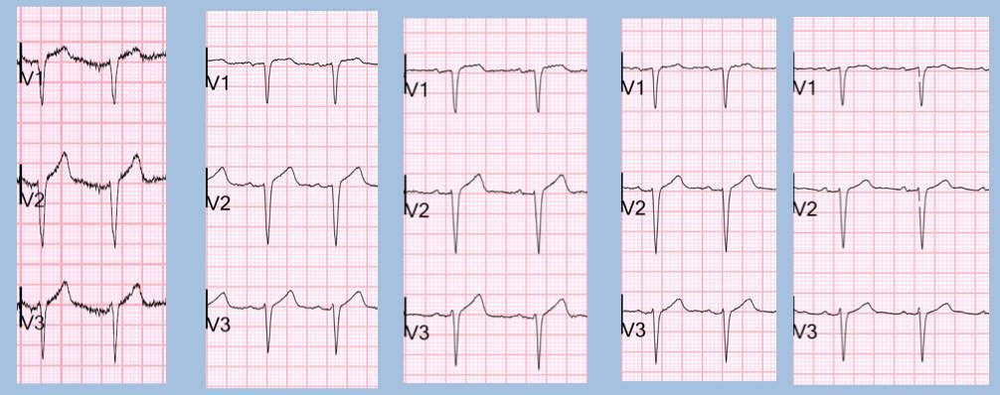
Kết cục:
Troponin I lần thứ ba, lấy máu 4.5 giờ sau khi nhập viện, có kết quả 4.2 ng/mL.
Bệnh nhân được chụp mạch vành và có hẹp 80% do huyết khối ở LAD đoạn giữa kèm bệnh LAD đoạn gần, cũng như một tổn thương 90% ở nhánh chéo. Ông được phẫu thuật bắc cầu chủ vành (CABG).
Kết cục này hoàn toàn phù hợp với tất cả các điện tâm đồ.
Những điểm cần học:
1. Chú ý đến biên độ sóng T giảm dần trong khi cơn đau giảm dần.
2. Các công thức rất chính xác. Tôi luôn nghĩ rằng mình có thể làm tốt hơn các công thức của mình, nhưng giờ thì tôi đang nghi ngờ điều đó.
3. Một số bệnh nhân có ST chênh lên gần như bằng không lúc ban đầu. Bất kỳ mức ST chênh lên nào ở những bệnh nhân này đều là bất thường. Ở những bệnh nhân như vậy, tắc LAD có thể chỉ gây ST chênh lên rất kín đáo.
Ca 11.
Một nam giới 40 mấy tuổi bị đau ngực đang giảm dần – bạn nghĩ gì?
Một nam giới 40 mấy tuổi đến khám vì đau ngực đang giảm dần. Đây là điện tâm đồ đầu tiên của anh:

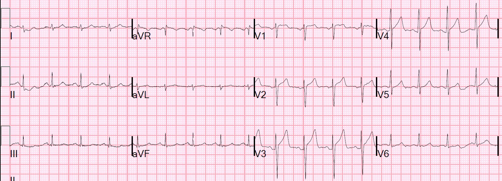
Các bác sĩ lâm sàng đã dùng công thức subtleSTEMI. Tôi không chắc chính xác họ đã dùng những con số nào, nhưng họ cho tôi biết giá trị họ tính được là 21.2.
Hãy cùng xem xét điều đó:
QTc do máy tính đo là 379 ms.
Biên độ sóng R ở chuyển đạo V4 từ 11-14 mm, tùy phức bộ được dùng để đo.
Đây là ảnh phóng to V3 để đo ST chênh lên tại 60 ms sau điểm J ở chuyển đạo V3:

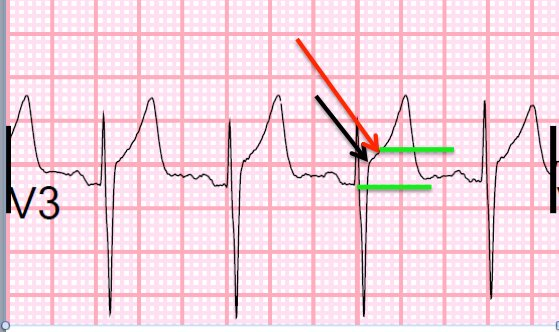
Nếu đưa các giá trị này vào công thức, dùng QTc là 379, chúng ta có 6 giá trị khác nhau tùy theo số đo:
RAV4 (biên độ sóng R ở V4) = 11 (tối thiểu) RAV4 = 12.5 (trung bình) RAV4 = 14 (tối đa)
_________________________________________________________________________________
ST chênh lên = 3.5 mm 22.96 22.5 22.0
ST chênh lên = 4.0 mm 23.56 23.1 22.6
Chỉ một trong 6 giá trị này là rất đặc hiệu cho tắc LAD (23.56, lớn hơn 23.4)
Tất cả các giá trị còn lại đều lớn hơn 22.0, ngưỡng mà trên đó chắc chắn phải lo ngại và ghi các điện tâm đồ liên tiếp.
QRS V2 (biên độ QRS ở V2) = 15.5 mm; công thức 4 biến cho giá trị thấp nhất là 17.6 và cao nhất là 18.9. Với điểm cắt chính xác nhất là 18.2, giá trị này cũng mơ hồ.
Vì vậy một điện tâm đồ thứ hai được ghi 12 phút sau đó:

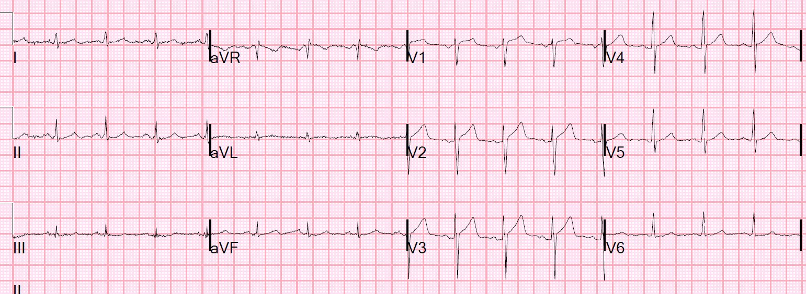
Giá trị công thức lúc này thấp hơn một chút.
Hai điện tâm đồ này khác nhau đáng kể, nhưng các bác sĩ điều trị đã không nhận ra.
Hãy xem hai điện tâm đồ đặt cạnh nhau. Và hãy nhớ rằng cơn đau đang giảm dần.

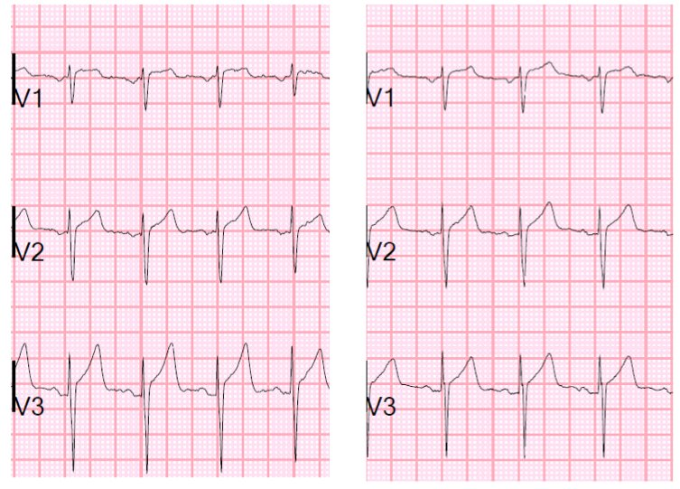
Điều này khiến gần như chắc chắn rằng ST chênh lên trên điện tâm đồ đầu tiên là do thiếu máu cục bộ.
Mặc dù các bác sĩ lâm sàng không chắc chắn và thu được giá trị công thức rất thấp cho cả hai điện tâm đồ, họ vẫn lo ngại về triệu chứng của bệnh nhân và đã kích hoạt phòng thông tim một cách thích hợp.
Chụp mạch vành cho thấy tắc 99% do huyết khối với dòng chảy TIMI-II (đủ dòng chảy mạch vành để ngăn ST chênh lên rõ rệt).
Nhiều khả năng động mạch đã tắc hoàn toàn vào thời điểm đau ngực nhiều nhất.
Những điểm cần học:
1. Sóng T tối cấp giảm kích thước khi động mạch tái tưới máu
2. Công thức dễ cho kết quả âm tính giả hơn khi động mạch đang tái tưới máu.
3. Giá trị dưới 23.4 nhưng vẫn lớn hơn 22.0 vẫn có thể là do tắc hoặc gần tắc LAD.
4. Các điện tâm đồ liên tiếp là rất quan trọng nhưng phải được soi kỹ để tìm thay đổi, vốn có thể rất kín đáo (xem bên dưới).
Ca 12.
Siêu âm tim, ngay cả khi (hoặc nhất là khi) có đánh dấu mô (speckle tracking), có thể khiến bạn gặp rắc rối.
Đây là một phụ nữ 30 mấy tuổi bị đau vùng cơ thang hai bên.

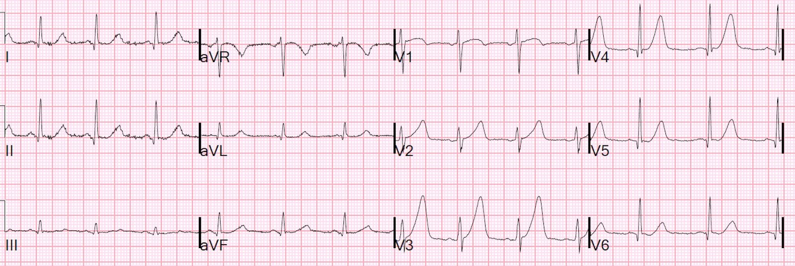
Có 1 mm ST chênh lên ở V3, vì vậy có thể dùng công thức để xác định đây có phải ST chênh lên bình thường hay không
QTc là 444 ms.
STE 60 V3 (ST chênh lên tại 60 ms sau điểm J ở V3) = 1.5 mm, biên độ sóng R ở V4 = 15 mm
Giá trị công thức là 23.1, gần với giá trị tắc LAD là 23.4. Nó dưới điểm cắt 23.4, nhưng trên giá trị an toàn của tôi là 22.0 Giá trị công thức 4 biến = 19.38 (phù hợp với tắc LAD)
Biên độ QRS ở V2 rất nhỏ so với tái cực sớm, và đó là lý do công thức cho kết quả đúng ở ca này.
Ca này đã bị các bác sĩ bỏ sót, ngay cả khi có siêu âm đánh dấu mô (speckle tracking) tại giường: không thấy rối loạn vận động thành.
Troponin I lần đầu dưới ngưỡng phát hiện.
Bệnh nhân được nhập viện để loại trừ nhồi máu cơ tim, nhưng troponin thứ 2 tăng, vì vậy cô được ghi một điện tâm đồ khác:

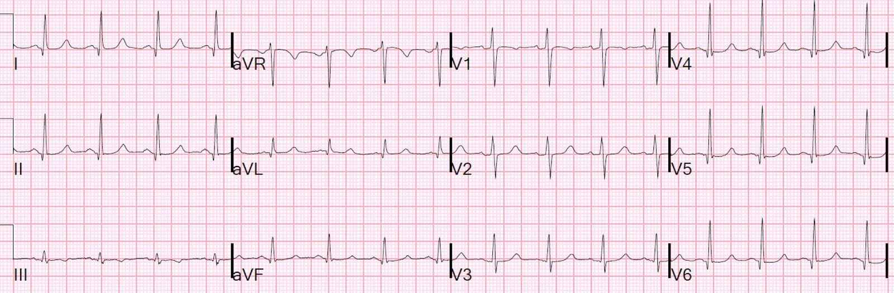
May mắn cho cô, động mạch đã tái tưới máu tự phát. ‘
Kết cục
Cô được chụp mạch vành ngay sau đó và có tổn thương LAD có huyết khối, đang thông với dòng chảy TIMI-3. Tổn thương được đặt stent.
Ca 10.
Một người 25 tuổi bị khó chịu vùng thượng vị, nặng hơn khi nằm ngửa, đỡ hơn khi ngồi dậy.

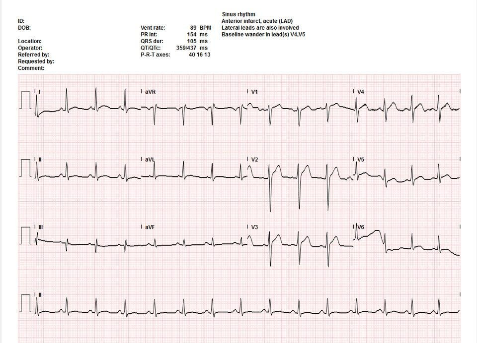
QTc do máy tính đo = 437
(hãy chú ý nó đã kéo dài ra so với các giá trị trước đó là 372 và 402 ms!)
Biên độ sóng R ở V4 = 9 mm, QRS = 26
Công thức 3 biến = 25.839 (lớn hơn 23.4 thì gần như chẩn đoán tắc LAD)
Công thức 4 biến = 19.0 (lớn hơn 18.2 thì gần như chẩn đoán tắc LAD)
Phòng thông tim được kích hoạt, và chụp mạch vành cho thấy tổn thương 90% ở LAD đoạn xa có huyết khối. Điện tâm đồ sau PCI cho thấy sóng T tái tưới máu.